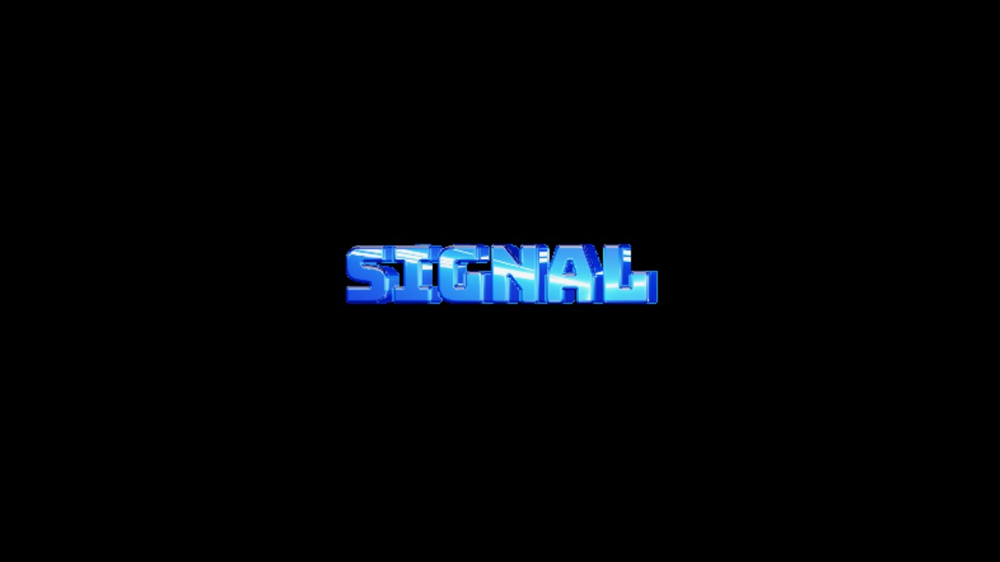
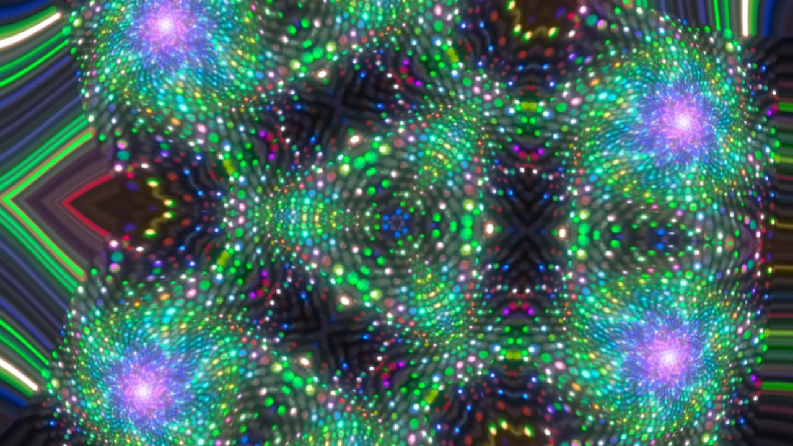
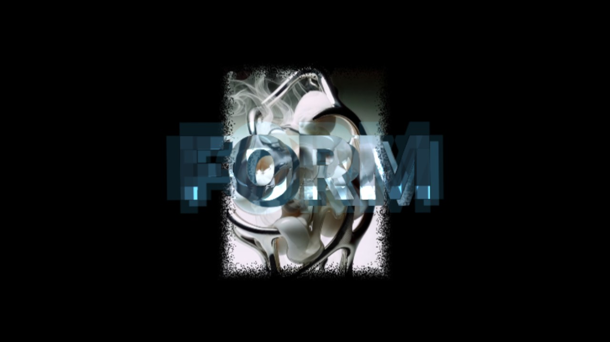
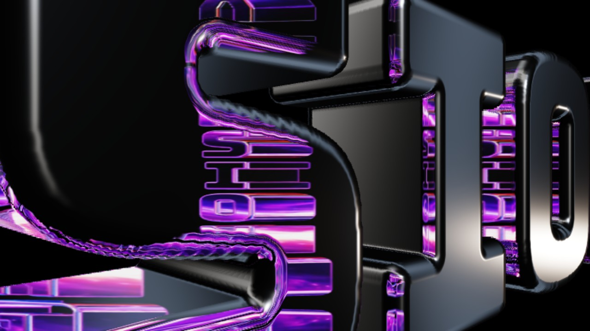
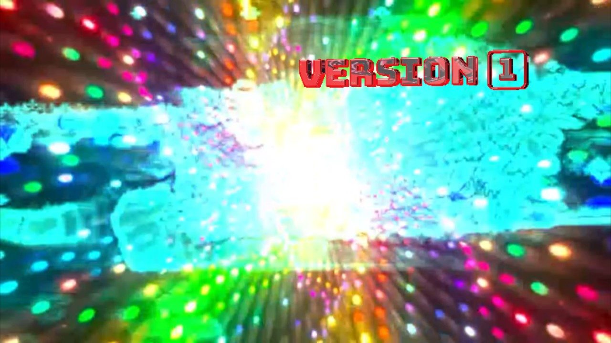
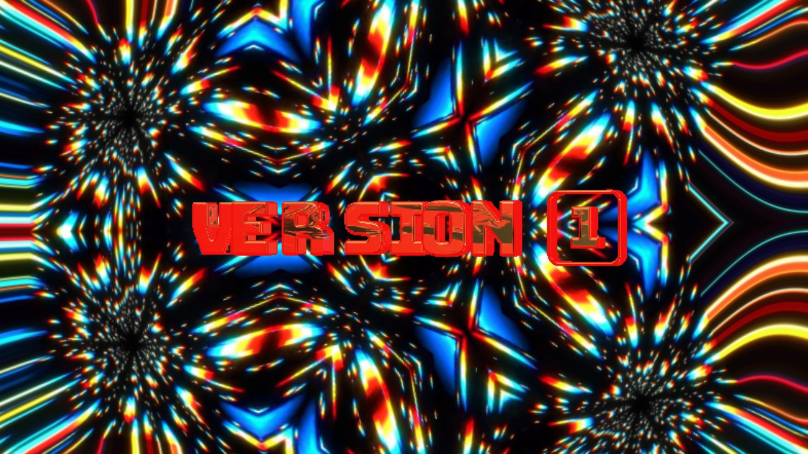
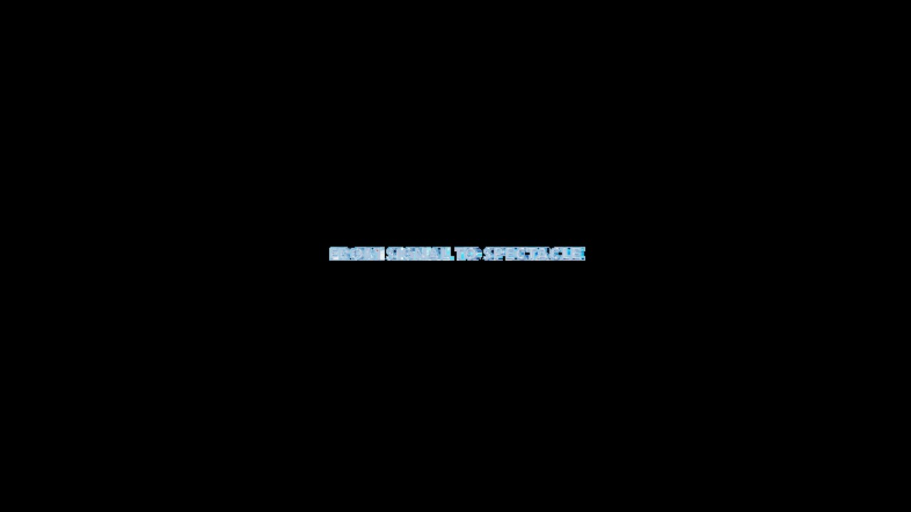

00:00 — 01:04
I · A signal in the dark
A single light becomes an identity. Quiet, spacious and unmistakably deliberate.
View 2 directed shots
- A single lightsingle · 32s
- The first constellationsingle · 32s
One light becomes a world. That world acquires an identity. Human movement brings it to life. Then everything resolves back to black.
Watch the 84-second preview · actual app output
Silent preview film · 1280 × 720 · the saved 12-minute playlist contains the full edit.
In Playlists, select VERSION1 · From Signal to Spectacle · 12 min. Use 16:9, captions off, source audio muted and playlist looping off. Preview first, then use your normal output handover.
A reusable model is also saved in Show Builder. The package was created without starting live output or opening a camera or microphone.

00:00 — 01:04
A single light becomes an identity. Quiet, spacious and unmistakably deliberate.

01:04 — 02:40
The same signal unfolds through every layout; symmetry gradually fills the room.

02:40 — 04:16
Ripples, time reversal and colour turn patterns into something tactile.

04:16 — 06:24
The film moves inside the Version1 mark. Materials, choreography, depth and flight become the main characters.

06:24 — 08:00
An apparently synthetic world reveals its human input. Movement becomes the instrument.

08:00 — 10:24
All the languages combine: the fastest, richest and most layered passage of the show.

10:24 — 12:00
Space returns. The mark stands upright, becomes familiar, and finally disappears into silence.
4:16 · Saved playlist
Every one of the app’s 61 transitions, presented across alternating footage. A complete visual reference after the cinematic show.
1:36 + optional 1:04
Connect a camera for the Live Input Encore: movement mask, glow and distortion with logo/text layers. Follow with an operator-led audio-reactive Auto Perform finale.
Production walkthrough
Reload and sort the library, inspect virtual cues, pause logo animation, resume the Show Builder edition, then record a portrait render and reuse it as a source.
The main film runs without hardware. Its human-motion sequence was processed from existing recorded footage through the real motion extractor. The live encore requires a camera you explicitly connect; audio reactivity requires a connected music input.
No music is bundled. For a scored performance, 120 BPM fits the 16- and 32-second phrases. See the running sheet for the musical arc and live handover.